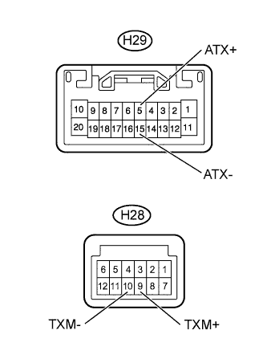

AUDIO AND VISUAL SYSTEM (w/o Multi-display) > AVC-LAN Circuit |
| 1.INSPECT RADIO RECEIVER ASSEMBLY |
|  |
Disconnect the H29 and H28 radio receiver assembly connectors.
Measure the resistance according to the value(s) in the table below.
| Tester Connection | Condition | Specified Condition |
| H29-5 (ATX+) - H29-15 (ATX-) | Always | 60 to 80 Ω |
| H28-9 (TXM+) - H28-10 (TXM-) | Always | 60 to 80 Ω |
|
| ||||
| OK | |
| 2.CHECK HARNESS AND CONNECTOR (RADIO RECEIVER - COMPONENT WHICH HAS STORED THIS CODE) |
Referring to the wiring diagram, check the AVC-LAN circuit between the radio receiver assembly and the component which has stored this code.
Disconnect all connectors between the radio receiver assembly and the component which has stored this code.
Check for an open or short in the AVC-LAN circuit between the radio receiver assembly and the component which has stored this code.
|
| ||||
| OK | ||
| ||